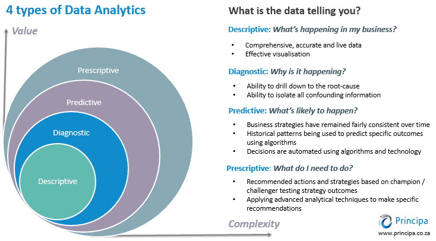

Laboratory Activty 1#

The 4 Types of Data Analytics (Matteson A., 2017)
Data analytics is the field that includes various methods of data exploration. Any kind of information can undergo data analytics to extract insights that can drive improvements. These techniques can uncover trends and metrics that might otherwise be obscured within large datasets. Such insights can then be utilized to optimize processes, enhancing the overall efficiency of a business or system. There are four types of data analytics, each are in their own respective level of value and complexity.
Descriptive Analytics#
Descriptive analytics focuses on summarizing historical data to understand what has happened over a given period. It uses data aggregation and data mining techniques to provide insights into past performance and trends. By creating reports, dashboards, and scorecards, descriptive analytics helps organizations understand their current status and how they got there. This form of analytics is foundational, as it provides the context and baseline information necessary for more advanced types of analysis.
Diagnostic Analytics#
Diagnostic analytics goes a step further by examining data to determine the causes of past outcomes. It delves into the details of descriptive analytics to uncover why certain events occurred. Techniques such as drill-down, data discovery, data mining, and correlations are used to identify patterns and relationships. This type of analytics helps organizations understand the underlying reasons behind trends and anomalies, providing a deeper insight into the factors influencing their performance.
Predictive Analytics#
Predictive analytics uses statistical models and machine learning algorithms to analyze historical data and make forecasts about future events. By identifying patterns and trends from past data, predictive analytics can estimate the likelihood of future outcomes. This type of analytics is crucial for decision-making, as it allows organizations to anticipate potential challenges and opportunities, helping them to plan and strategize more effectively.
Prescriptive Analytics#
Prescriptive analytics goes beyond predicting future outcomes by recommending actions to achieve desired results. It uses optimization and simulation algorithms to suggest the best course of action based on the predicted data. Prescriptive analytics takes into account various constraints and objectives, providing specific guidance on how to address potential issues or capitalize on opportunities. This advanced form of analytics supports decision-making by suggesting actions that can help achieve business goals and improve overall performance.
Understanding the four types of analytics is crucial for mastering artificial intelligence (AI). Descriptive analytics lays the groundwork by summarizing historical data, providing insights into past trends essential for building predictive models in AI. Diagnostic analytics goes deeper, uncovering the reasons behind trends, which is fundamental in training AI algorithms to recognize patterns and anomalies effectively. Predictive analytics plays a pivotal role by forecasting future outcomes based on historical data, a capability vital for AI systems to make informed decisions and projections. Finally, prescriptive analytics not only predicts future scenarios but also prescribes optimal actions to achieve desired outcomes, guiding AI systems in making proactive and strategic decisions. Together, these analytics types form the backbone of AI learning, equipping developers and researchers with the tools to enhance AI capabilities, optimize performance, and drive innovation across various domains.
Example Scenario:#
Dr. Jake is a medical doctor and the CEO of Astro JR, a giant pharmaceutical company in the Philippines. To support the production and use of AstroJR’s COVID19 vaccine, this company has implemented a number of business intelligence and data analytics tools. Your task is to provide the appropriate and necessary analytical questions Dr. Jake must ask his analytics team in order to provide better deployment and production of COVID19 vaccines around the world using descriptive, predictive, and prescriptive analytics.
Descriptive: How many infected cases since last week?
Diagnostic: What factor affects the demand of AstroJR’s COVID19 vaccine?
Predictive: How many deaths next week?
Prescriptive: If the number of cases will increase next week, how many hospital staff should be here to adequately treat the influx of patients?
To address the key questions identified by the analytics team, historical data on deaths will be crucial. By analyzing this time-series data, the team can leverage statistical modeling techniques to uncover patterns and trends that will enable them to generate accurate forecasts. The inclusion of a time variable in the inquiry makes the use of these statistical models essential, as they are specifically designed to handle and extract insights from data with a temporal component. This predictive modeling process will also introduce the team to the potential applications of Artificial Intelligence (AI) in this domain.
Laboratory Task 1#
Instruction: From the example scenario above, create additional two inquiries for each type of data analytics.
Descriptive:
How many students have been fully vaccinated in each university campus over the past semester?→ Helps summarize overall vaccination coverage among campuses.
What percentage of students reported mild side effects after receiving their vaccine doses?→ Gives insights into post-vaccination experiences and helps build trust in the vaccination program.
Diagnostic:
Why did certain universities have lower student vaccination rates compared to others?→ Identifies possible causes such as accessibility issues, misinformation, or scheduling conflicts.
What factors contributed to the higher vaccine hesitancy among freshmen students?→ Helps uncover behavioral or informational barriers affecting vaccine confidence.
Predictive:
Based on current data, how many students are expected to complete their second dose by the end of the school year?→ Assists in anticipating vaccine supply needs.
Which campuses are likely to experience an increase in COVID-19 cases during exam season?→ Helps the health team prepare for potential outbreaks when students gather more frequently.
Prescriptive:
If student vaccination rates remain low, what incentive programs (e.g., discounts, certificates, or free meals) should be implemented to increase participation?→ Suggests actionable strategies for improving vaccination engagement.
Given the predicted rise in cases during enrollment week, how should universities schedule on-campus classes to minimize infection risks?→ Provides guidance for proactive policy-making to maintain safety while resuming normal academic activities.